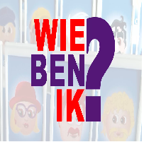

Wie ben ik

Informatie van spel
Wie ben ik? is een leuk en interactief familiespel dat je met 2 spelers kunt spelen.
Het is een eenvoudig spel met makkelijke regels, ideaal voor jong en oud.
In Wie ben ik? krijgt elke speler een kaart met een personage of voorwerp op zijn hoofd zonder te weten wat het is.
Door slimme ja/nee-vragen te stellen, proberen spelers te raden wie of wat ze zijn voordat de tegenstanders dat doen!
Het spel duurt meestal tussen de 10 en 30 minuten.
De spelregels zitten in het pakket. Wie ben ik? kost rond de €10 en is geschikt voor spelers vanaf 6 jaar.